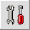

 The WOLF application supports entry of phonetics. The first step to use phonetics, should you want to include them in your dictionary entries, is to specify the font that you want to use for phonetic entry. To do this, click on the icon shown here on the right side of the north wall of the WOLF application frame. A dialog will appear where you can specify the font and size that you want to use. After clicking confirm, WOLF will be ready for phonetic entry.
The icon on the left wall of the application frame toggles between phonetic and indigenous entry. In phonetics mode, gloss dictionary words, definitions, examples, and ontological word forms can be entered using phonetic notation. If you don't need to enter phonetics into your dictionaries, simply ignore the toggle button. The default mode is for indigenous entry where dictionary words, definitions, examples, and ontological word forms will be entered using the indigenous font you specified for the language in question.